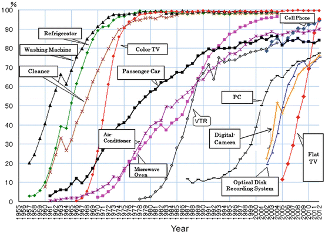
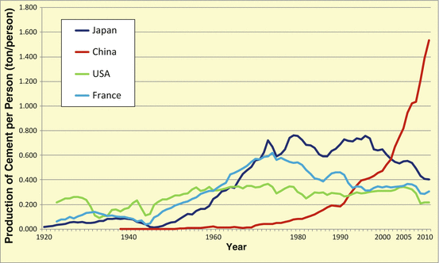
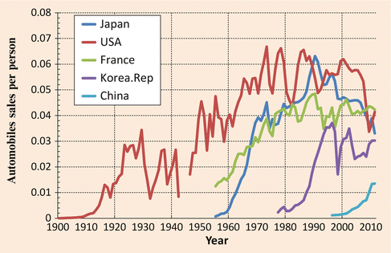

The True Character of the Demand Shortage in Advanced Nations
At the present time, in the search for growth opportunities many Japanese companies are making forays into developing markets
, with China being the prime example. In looking at developments since the Lehman Shock
of 2008, while the progress of economic recovery in advanced countries has been feeble, the recovery in developing countries has been strong (Kwan 2010). For this reason, it is easy to understand why companies are with one accord heading into these enormous markets. But, considering that the world will sooner or later be saddled with the same problems as Japan, it is necessary to think about how long the rapid growth of the developing world will continue.
Let us analyze the maturation of advanced countries and the rapid growth of developing countries with the concepts of what I call “diffusive demand” and “creative demand.” By diffusive demand I mean, broadly speaking, demand for all products that are now on the market. Durable consumer goods such as automobiles and televisions
, cement
(as an indicator for buildings,) et all fall into this category. Existing large-scale technologies and systems such as shinkansen trains, thermal power plants, and nuclear power
plants also fit this category. On the other hand, what I mean by creative demand is, in fact, latent demand for things that have not yet taken shape i
Because there is evidence that “diffusive demand” will saturate in the not-too-distant future, Japan must find a way out of its predicament using “creative demand.”
Demand for Man-Made Artifacts Will Necessarily Saturate
In coming to terms with the problem of demand, I have for some time now been advocating that the concept of “saturated demand for man-made objects” is important. A major reason for demand deficiency in advanced countries in my view is f the saturation of man-made objects
in the market. Simply put, the basic and consumer needs of the vast majority of people in these countries have been quantitatively met.
Housing and automobiles typify man-made objects and provide good examples of what I mean by saturation. In their lifetime people spend the largest amount of their personal income on housing (MIC Web-Site 2013). Automobiles are second. In consumer importance (MIC Web-Site 2013) Of course, significant expenses also accompany such events as weddings and funerals, but these are
services, not artifacts Here I would like to consider the demand for goods.
The saturation of a man-made object is the condition whereby a given artifact reaches every part of the population in sufficient quantity. This saturation has a definite effect on the demand structure. Two types of demand drive diffusion of products or technologies in the market place. The first is “new demand” for acquiring an object, artifact, or technology for the first time,. The second is
demand for replacement or renewal (upgrading, to a larger television or a faster computer, for example) of something acquired previously. When a man-made object saturates, (i.e. when everyone who needs it has it) the “new demand” vanishes, leaving only replacement demand. In developing countries, generally new demand plays a central role, but in advanced countries the nucleus of demand shifts to replacement demand.
Let us consider housing. The population of Japan in the twenty-first century has been essentially flat at a level around 127 million, peaking at 128,084,000 in 2008 and then shifting to a slight decline (MIC Web-Site 2013). However, owing to the change from extended families to nuclear families, the number of households continued to rise in this century and now has almost reached saturation at roughly 50 million. In comparison to this, the total number of dwellings is around 60 million and already exceeds the number of households by about 10 million (MIC Web-Site 2013).
Many people can probably grasp these figures as something they experience personally. Of course, there are cases where some own summer houses or other second homes, but many of the dwellings in excess of the number of households are vacant homes where no one lives. The truth is, there are many cases where we have built homes in the Tokyo
metropolitan area and left unoccupied the homes in the countryside where our parents, who have already passed away, used to live.
In Japan each household already has shelter, one primary home, and thus housing, which is a man-made object, has saturated. When the saturation condition of this man-made object is reached, the demand for housing shifts from new demand to demand for replacement
or re-building of old homes. If we take 50 years to be the average lifetime of a dwelling (its service life), then the annual demand, equal to the total number of owned homes divided by the average lifetime, is 1–1.2 million homes. In fact, if we look at new home construction starts over the past 20 years or so, disregarding the post-Lehman Shock
years of 2009 and 2010, this is roughly the level we see (MLIT Web-Site 2013).
Next, consider automobiles. At present, the number of four-wheeled passenger cars owned in Japan is approximately 58 million, roughly one vehicle for every two people (Japan Automobile Manufacture Association, Inc. 2013). In just about every advanced nation, such as the United States, the United Kingdom
, France
, or Germany, there is roughly one car for every two people. In contrast to this, in China there are roughly two cars for every 100 people, and in India only about one car for every 100 people.
In China, which has only two cars for every 100 people, until American or Japanese levels of 50 cars for every 100 people are reached, automobile sales will boom. The stock of automobiles will continue to rise. In other words, new demand will cause the market to expand explosively, and this situation is the same in India or anywhere else in the developing world (Japan Automobile Manufacture Association, Inc. 2013).
On the other hand, what will be the situation when automobiles saturate as in Japan? Just because they have saturated, it is not the case that automobiles will completely stop selling. Assuming an average lifespan of 12 years before they are scrapped, each year the number of cars sold will be equal to the number scrapped. That is to say, replacement
demand will form the core of demand. In Japan there is a stock of a bit less than 60 million passenger vehicles, and taking 12 years as the lifetime, 60 million divided by 12 years means 5 million vehicles will be newly sold each year. In reality, over the past 10 years the number of passenger vehicles sold domestically in Japan has fluctuated between approximately 4 million and less than 5 million (Japan Automobile Dealers Association 2013).
Figure 1.1 shows at what speed demand for consumer durable goods has saturated in Japan. We can see that, depending on the product, the speed of increase in the household diffusion rate is slow for some items and fast for others. What is really conspicuous is the speed of diffusion of color televisions
.

Fig. 1.1
Trend for diffusion rate of consumer durable goods per household in Japan. Source: http://www2.ttcn.ne.jp/honkawa/2280.html
It seems that the driving forces behind the speed of diffusion are human beings’ strong desire to view images—that is, to obtain information through the sense of sight—and a reasonable price in comparison to automobiles. From their first appearance until reaching a diffusion rate of 90 %, it took color televisions
only about 8 years. Recently, the mainstream flat-panel televisions too have been spreading amazingly quickly.
Just as cathode-ray tube color televisions
gave way to flat-panel technologies such as liquid crystal displays, so too will two-dimensional televisions 1 day become three-dimensional TVs. When this happens, a new demand will certainly be born for an already existing man-made object (televisions). But it is important to keep in mind how this new situation will be different from the time when televisions first appeared on the scene. The cathode-ray tube televisions that were born at a time when there were no televisions at all were acquired as new demand by nearly all households that had a respectable level of income. The next-generation color televisions probably did have the effect of speeding up the timing of replacement
TV purchases, but it was still, after all, replacement demand and differed from new demand. In the future, when 3D TVs appear, more than a few people will likely not buy them. It is the same for housing. In this manner the saturation of man-made objects
has a decisive effect on the demand structure.
In nearly all advanced countries the population has stopped growing. The fundamental shift in the nature of demand to replacement
or renewal demand caused by the saturation of population and of man-made objects lies at the heart of the demand shortage
that plagues advanced economies.
How Long Will China’s High Growth Last?
Right now, China is the driving force behind world demand (Morrison 2013). Do we have any idea how long China, by virtue of its voracious demand, will continue to be the engine of the global economy? Let us consider the sustainability
of China’s economic growth
from the standpoint of the saturation of man-made objects
.
If you are an optimist, you are likely to say something to the effect that, “Because China, at any rate, has a population of 1.3 billion, it will be all right, at least for a while.” But if we compare it to past examples, things are not as simple as that.
It is difficult to decide for which products we should look at the saturation rate. Here we will take up the examples of passenger cars and, as a representative index of social infrastructure, cement
.
Steel
also provides a good index of social infrastructure, but scrap—one of the sources of raw material for steel making—is imported and exported in large quantities, as is the steel produced in blast furnaces. Consequently, when we look at the degree of investment domestically, we must adjust the import and export figures to account for these different sources, and cannot simply use the production figures for crude steel.

Fig. 1.2
Production of Cement per person. Source: Cement production volume: United Nations Statistical Yearbook. Population: UNSD Demographic statistics, United Nations Statistical Yearbook
In contrast, cement
is heavy and inexpensive. For this reason it is almost entirely locally produced for local consumption
. If we look at how much cement is produced, we have an index from which to infer how close to saturation social infrastructure such as roads, ports, dams, and bridges are coming.
Figure 1.2 shows the changes over time in per capita cement
production (i.e., the amount of cement produced annually divided by the present population) for Japan, China, the United States, and France
. As can be seen, the speed at which cement production in China has increased in recent years is amazing. Considering this speed, because China’s population is so large, one is forced to ask whether the market might not saturate.
Just how far will the saturation of China’s cement
market progress? To answer this, we must look at stock production totals—how much cement has been used until the present. In calculating this, it is proper to perform the mathematical integral to find the area under each of the curves in the figure. If we do this, we find roughly 16 tons per person for the U.S. Among advanced nations the U.S. is in fact a special case. The ratio of immigrants who arrive from overseas is high. As a result, the U.S. is the sole advanced country whose population is increasing even now. Compared to Japan or France
, its cumulative cement
use is small, but taking into consideration its population increase it is generally difficult to say the U.S. is typical of the advanced countries.
Other countries like France
show a typical pattern for advanced nations. From around the time of the end of the Second World War in 1945, cement
production increased significantly, reaching a peak in the mid-1970s. From that time production began to fall, and in recent years has been virtually flat. It would be best to interpret this as France having entered the period where production is only responding to replacement demand. Even if the construction of infrastructure has practically stopped, after 50 years of use buildings, roads, and other constructions begin to degrade and must be repaired or rebuilt, thereby giving rise to a certain amount of demand. Including this as well, France’s total investment in cement comes to 22 tons per person.
In Japan too, from the 1960s to the first half of the 1970s cement
production rose dramatically. This period corresponds to the period of Japan’s post-war economic miracle, when an annual economic growth
rate near 10 % continued for several years. After that time there were repeated fluctuations at a high production level, but from the late 1990s production began to fall and presently appears to be asymptotically approaching an equilibrium state. Cumulative production in Japan is 29 tons per person.
In China, as shown in Figure 1.2, until 2011 the per capita total stock of production was already close to 15 tons per person. Total world cement
production in 2011 was approximately 3.6 billion tons; of this, China actually produced 2.1 billion tons, corresponding to 58 % of the world total. Converting this to a per capita annual production rate, it is roughly 1.5 tons, so assuming that this pace continued, the cumulative stock in China likely caught up to the U.S. in 2012, will catch up to France
in 2016, and to Japan shortly after 2020.
The land area of China and the U.S. are almost the same, and China’s population is 4.5 times that of the U.S. The fact that by 2012, the per capita cumulative production of cement
will be the same in the two countries means that on China’s territory cement will have been poured 4.5 times more densely than in the U.S. It is the case that the gross “investment” in infrastructure such as highways, airports, and buildings will be 4.5 times larger in China than in the U.S.
Thus, supposing China continues for the time being its high annual growth of 10 % per year, if infrastructure (roads, ports, buildings, etc.) is constructed faster than projected, then in as little as 2 years—and in any case in no longer than 10 years—China is certain to reach a condition of saturation. Even in terms of actual experience, already if one looks out from elevated ground over a city like Beijing, the density of highways, buildings, and the like is no different from Tokyo
. Shanghai and the coastal areas are the same. It is hard to imagine that there is much room left to pour large quantities of concrete. Even in Ürümqi, the capital of the inland Xinjiang Uyghur Autonomous Region, large buildings line the streets.
Automobiles Will Also Reach Saturation in the Next 7–10 Years
Next, we consider automobiles, which occupy an important segment of economic activity.
First let’s contemplate how many automobiles can be sold once these man-made objects reach saturation and enter an equilibrium state. As already stated, in advanced countries for every 100 people there are 50 automobiles. Assuming cars on average are scrapped after 12 years, 50 divided by 12 gives about 4.2 vehicles. That is to say, each 100 people own 50 automobiles and, supposing they replace these every 12 years, among these 100 people each year four people purchase a replacement
car. This is the demand in the state of equilibrium.
In fact, domestic automobile sales in advanced countries per 100 members of the population are 5 in the U.S., 4 in Japan and France
, and 3.5 in South Korea, where the saturation state has practically been reached. In Japan’s experience, in 1963 one vehicle per 100 people was reached, and 6 years later three vehicles per 100 people was achieved. South Korea, about 25 years behind Japan, followed the same growth pattern from 1987 to 1992. In other words, it only took 5–6 years to reach the saturation value of three to four vehicle sales per year per 100 people (Fig. 1.3). This period overlaps with the period of rapid cement
production growth in Japan and in Korea, and took place in each country during the economic boom years.

Fig. 1.3
Automobiles in China will saturate within 5–10 years. (Data of Automobile sales: Automobile industry handbook (Japanese). Data of Population: UNSD Demographic Statistics)
If we think in terms of these kinds of historical circumstances, we can see that China has entered the same growth trajectory 50 years after Japan and 25 years after Korea. China reached about 13 million automobile sales in 2009 and about 18 million in 2010. If we convert these figures to vehicles per 100 people, they correspond to 1 and 1.4 vehicles, respectively. Accordingly, within the next 5–6 years, per 100 people there will be three to four vehicles sales annually in China; to put it another way, the market will likely reach the level of 40–50 million vehicles per year. But this market too will before long saturate, and growth in the number of sales is forecast to hit its ceiling.
In this way, if we forecast the future of cement
, an indicator of the status of infrastructure provision, and of automobiles, an indicator of the status of durable good diffusion, it will not be very long before China reaches the state of “saturation of man-made objects
.” We may see that China’s economic growth
can be the engine of the global economy only for another t 5–10 years or so.
Accompanying Overproduction, Keen Competition Will Intensify
The potential for product saturation suggests a huge problem looms on the economic horizon. Namely, economies will be encumbered by production overcapacity.
In the growth phase, beginning from the state where the stock of automobiles is small until entering the saturation stage where 50 automobiles are owned per 100 people, demand for new products exists and is expanding. Of course, demand fluctuates somewhat, but depending on the year there will be some years when more than four cars per 100 people can be sold.
For example, in the process leading up to 50 cars being owned per 100 people, it is the case that there will be years in which six or seven vehicles can be sold per 100 people. If we look at the example of Japan, this corresponds to the decades from the 1970s to the 1990s. During that period, up to six vehicles per 100 people were sold. In China’s case, the annual number of cars sold would be equal to 13 million (i.e., the total number sold at the time when one car is sold per 100 people) multiplied by 6, or about 80 million cars. In other words, the number of cars sold will overshoot the number sold in equilibrium. Even though manufacturers know that this is overreaching, in response to the sudden rise in sales volume they will struggle fiercely to increase their production capacity in an attempt to quickly secure market share. In consequence, they will become saddled with an excess of production capacity.
During the era when Japan’s automobile industry was growing, the U.S. market was still continuing to expand. Then it was possible to make use of the production capacity in excess of domestic demand for U.S.-bound exports. However, the American market is now for the most part not expected to expand. Other advanced nations, just like the United States, are also in a state of saturation. What can be done once the number of cars sold in China stops growing and the production overcapacity becomes apparent, as a result of the number of owned cars accumulating, the market saturating, and the number of cars sold per 100 people reaching three or four? We can only count on India as the next market, but India too is chasing hard on the heels of China. The speed at which man-made objects are saturating is high.
Of course, owing to the diffusion of hybrid vehicles and electric vehicles, replacement
demand will to some extent be promoted. But, in the end, in advanced countries because this is not new demand, the number of vehicles sold per 100 people will not rise dramatically. The market will reach saturation
The new wave of hybrid vehicles and electric vehicles will also hit developing countries at the same time. Thus it is difficult to imagine a transition scenario like the one that advanced countries experienced, where the diffusion of gasoline vehicles is next followed by the shift to hybrid and electric vehicles.
Companies are pursuing a strategy of focusing on China as it is for the time being the driving force of global demand. However, it is necessary to plan business development while fully keeping in mind that sooner or later the era will arrive of cutthroat competition caused by production overcapacity. That period will come far sooner than is generally thought.
The “Clouds Above the Hill” Are No Longer There or “Lost in the Fog”
If we suppose that, even when viewed globally, the saturation of man-made objects
is coming in the not-too-distant future, it is clear that the problems confronting Japan cannot be solved by pursuing diffusive demand and forging ahead into developing countries.
First, rapid growth in developing nations’ means that man-made objects will saturate in those countries unexpectedly quickly, and sooner than is generally thought to be the case. As a result, in the course of time overproduction is going to be accompanied by increasing competition for shrinking markets.
Second, there is the employment problem. If Japanese companies launch into developing countries, the domestic market will become hollowed out. On the other hand, in the sense that Japanese can work overseas, new employment will be created. In addition, we can expect an effect whereby demand from developing countries revitalizes domestic industries. But, in the aggregate, it cannot be said that this will be a benefit for Japan’s total domestic employment.
Third, the Japan of today is faced with two particularly burdensome problems. The first of these is how to ensure the provision of materials such as energy
, resources, and food. As for resources like crude oil
and iron ore, growth of demand in developing nations coupled with limited and dwindling means that prices will continue to rise overall, even taking into account volatile spikes and plunges in the market. By around 2050 the prices of all resources will surely be high. For food also, due to population growth and the increase in the rate of meat consumption
, it is projected that supply and demand will be strained. Regulations regarding deforestation too are being strengthened. Even taking account of nuclear energy as a self-sufficient energy source, Japan imports some 80 % of its energy in the form of crude oil and other fossil fuels (OECD 2011). Japan also relies nearly 100 % on imports for almost all of its mineral resources (JOGMEC Web-Site). Imports make up 75 % of timber and pulp raw materials, and on a calorie basis 60 % of food (MAFF 2011; Forestry Agency 2011).
In the future, will Japan really be able to go on with this system of reliance on imports for these kinds of mainstay material resources? We must come up with an answer to this problem.
The second burdensome problem is connected to the social system: the depopulation of the countryside, the overcrowding of cities, medical care, pensions, transportation, logistics, education, national finances, declining birthrates and an aging
population, among other issues. In particular, let us focus on the graying population issue. The graying society is a problem that humanity will not be able to avoid in the twenty-first century, and moreover it is an issue that problem-saddled advanced nation Japan will experience ahead of other nations. I would like to discuss other problems in relation to the graying population issue.
The aging
population is a result of longevity. As a consequence it is something we should rejoice in, and is without a doubt a good thing. I hope that we want to create a society that can sing the praises of longevity without anxiety.
History teaches us that where there is demand, new industries are born. Thus it stands to reason that we must create new industries by making clear the latent needs that are generated along with the advent of the aging
society. As Japan becomes a graying society, the working-age population between 15 and 65 will fall, and the country will find itself in a pinch. But in fact this situation itself can be parlayed into an opportunity.
Even in China, which on the whole is thought to have a young population, the working-age population will begin to decline in 2015 (BTMU 2010). The aging
of society is not a problem of Japan only. It is not only a problem of all advanced nations, but an issue for all humanity that will soon involve developing nations as well.
The reasons are clear. First, because ordinary people have come to receive sufficient nourishment and have access to clean water, and also enjoy the benefits of advanced medical care, the lengthening of human life span has progressed. The average life span during Classical Greek and Roman times was 24–25 years, and even in the year 1900 it was a short 31 years. During those eras of short life spans, access to good nutrition, clean water, and medical treatment did not extend beyond a limited ruling class. Many of the individuals who have left their mark on history belonged to this ruling class and had relatively long lives. It is said that Socrates lived into his early seventies, and Plato lived to around eighty. Additionally, especially because of the diffusion of education to women, the condition of having several, or in the most extreme cases more than ten, children has decreased. These are the causes of the aging
of society. In other words, the graying society can be said to be the inevitable result of the advance of civilization.
Consequently, we will move forward by inventing supply to cope with the aging
of society and awaken demand for this supply. Or, by making the new needs apparent as demand and inventing supply, we should be able to create new industries. The industries born by doing this will surely become universal for all humanity.
The industries based on “diffusive demand” still have advantages in developing countries, where new demand is vigorous and wages are low. Therefore, it is necessary for a developed nation itself to dig up the “creative demand,” whose shape is still not clear, and through these new industries expand the economy of its own country. This is the shape of the reality for parlaying crisis into opportunity.
The years in Japan after the collapse of the Bubble in 1991 are called the “Lost Decade” or the “Lost Two Decades.” But in fact since Japan became an economic superpower with the second largest GDP in 1968, for the next 40 years its growth as a developed country has stopped (MIAC 2012). Diffusive demand expanded and the GDP grew, but Japan has not been able to bring forth the “creative demand” that is the foundation for further development. In this sense we should have called this period the “Lost Four Decades.”
However, problem-saddled developed country Japan is in an optimal position to generate “creative demand” as it is preceding the rest of the world in addressing the problems of energy
and resources, the environment, the graying society, etc. Indeed it is this very demand that will become the foundation on which Japan will break loose from the “Lost Four Decades” and once again prosper.
Attaching importance to the “creative demand” discussed in this chapter does not contradict the international development of industries related to “diffusive demand.” On the contrary, a synergistic effect is called for. New industries will likely be able to unfold internationally in a period sooner than could be imagined in the past. Likewise, for instance, core components that Japanese corporations manufacture domestically will be exported to assembly plants launched overseas, and conversely parts produced overseas will be turned into products in domestic factories and re-exported. In this way the demand of developing countries will revitalize the domestic economy, and the resultant reserve strength can be applied to a new industrialization geared toward creative demand. In this manner we must endeavor to act in concert as the two wheels of a single axle.
In a manner of speaking, the international development of diffusive demand was the growth struggle of the twentieth century, while the new industrialization for creative demand is the modern battle of the twenty-first century. I believe that prosecuting both of these battles simultaneously and synergistically is the strategy that Japan must pursue.
Since the Meiji Era, Japan has aimed for the “clouds above the hill.” Japan pushed forward with the developed nations of the West as its goal. But we ourselves have become a developed nation and now, standing amidst the clouds, though we look up to the sky we find nothing to set our sights on. There is nothing for us to do but ourselves decide our target and push forward. This is precisely the fate of a developed nation.
In the next chapter I consider the methods for stimulating “creative demand.”
References
Bank of Tokyo Mitsubishi UFJ (2010) BTMU China Economic TOPICS No.28, p 4. Economic Research Office (Hong Kong). http://www.bk.mufg.jp/report/ecostc2010/chinatopics_20100202.pdf. Accessed 27 May 2013
Forestry Agency Ministry of Agriculture, Forestry and Fisheries Japan (2011) Annual report on forest and forestry in Japan fiscal year 2011 (Summary), p 23. http://www.rinya.maff.go.jp/j/kikaku/hakusyo/23hakusyo/pdf/23_e.pdf. Accessed 27 May 2013
Japan Automobile Dealers Association Web Site (2013) http://www.jada.or.jp/contents/data/type/type00.html. Accessed 27 May 2013
Japan Automobile Manufacture Association, Inc. Web-Site (2013) http://www.jama.or.jp/world/world/world_2t1.html. Accessed 27 May 2013
Japan Oil, Gas and Metals National Corporation Web-Site. http://www.jogmec.go.jp/library/metal_002.html. Accessed 27 May 2013
Kwan CH (2010) Inflationary pressure rising with economic recovery—Whither the “exit strategy” from the ultra-loose monetary policy? Research Institute of Economy, Trade & Industry, IAA. http://www.rieti.go.jp/en/china/10020302.html. Accessed 27 May 2013
Ministry of Agriculture, Forestry and Fisheries Japan (2011) FY2011 Annual report on food, agriculture and rural areas in Japan, p 7. http://www.maff.go.jp/j/wpaper/w_maff/h23/pdf/e_all.pdf. Accessed 27 May 2013
Ministry of Internal Affairs and Communications (2012) Economy. In: The statistical handbook of Japan 2012, p 27. Statistics Bureau, Ministry of Internal Affairs and Communications. http://www.stat.go.jp/english/data/handbook/pdf/c03cont.pdf. Accessed 27 May 2013
Ministry of Internal Affairs and Communications Statistics Bureau, Director-General for Policy Planning & Statistical Research and Training Institute Web-Site (2013) Population and households. In: Japan statistical yearbook 2013. http://www.stat.go.jp/data/nenkan/pdf/yhyou02.pdf. Accessed 27 May 2013
Ministry of Land, Infrastructure, Transportation and Tourism Web-Site: Statistics, Housing Starts, e-Stat. http://www.e-stat.go.jp/SG1/estat/ListE.do?lid=000001106416. Accessed 27 May 2013
Morrison WM (2013) China’s economic rise: history, trends, challenges, and implications for the United States. CRS report for congress, congressional research service. http://www.fas.org/sgp/crs/row/RL33534.pdf. Accessed 27 May 2013
OECD (2011) Japan Estimated energy supply balance for 2010, Energy Balances of OECD Countries 2011 Edition, p II.104. http://www.planbleu.org/portail_doc/energy_balances_oecd_2011.pdf. Accessed 27 May 2013